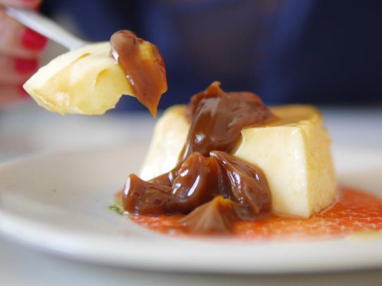

100g. de arroz (preferentemente doble carolina o para risotto)
1 litro de leche
150g. de azúcar
canela (en rama y en polvo)
cáscara de limón
PREPARACIÓN
Vamos a empezar poniendo en una olla nuestro arroz junto con el litro de leche.
Usamos tanta cantidad de leche para que el arroz nos quede bien bien cremoso.
Cortar unos pedazos de cáscara de limón y los vamos a agregar a la olla.
Agregar al arroz con leche una ramita de canela.
Si podemos conseguir que sea en rama, mucho mejor ya que en esta instancia la vamos a usar para aromatizar durante la cocción del arroz.
Esta mezcla, antes de ponerla al fuego, la vamos a dejar reposar entre 30 y 60 minutos.
Sepan que un arroz con leche reposado es un arroz con leche feliz! Al margen del chiste, este tiempo sirve para aromatizar y se embeba bien el arroz con los sabores de la canela y el limón. Así cuando lo cocinemos nos va a quedar mucho más sabroso.
Ahora sí, luego de este tiempo, vamos al fuego.
Le dejamos todo lo tiene adentro y lo vamos a tapar hasta que esté cerquita de hervir. Importante quedarse cerca del arroz!
Una vez que esté cerca del hervor, destapamos y comenzamos a revolver cuidadosamente.
Pueden dejarlo un rato solo, pero lo ideal es estar revolviendo lo más posible.
El momento de agregar el azúcar, es cuando prueben el arroz y sientan que está al dente.
Hay que seguir revolviendo el arroz con leche hasta que la misma comienza a evaporarse y el azúcar comienza a generar que la mezcla se ponga más espesa.
Cuando veamos que el arroz con leche esté cocido, apagamos el fuego, sacamos los pedazos de canela y de cáscara de limón,
y lo dejamos reposar unos minutos en la olla mientras lo batimos un poco más intensamente para que se termine de evaporar el líquido que queda y sea más cremoso aún.
Arroz con Leche

INGREDIENTES
5 huevos
500cc. de leche
200g de azúcar
PREPARACIÓN
Lo primero que vamos a hacer es cascar nuestros 5 huevos en un bol y luego, vamos a agregar 100g de azúcar.
Batimos un poco hasta romper el ligue de los huevos.
Agregamos la leche. Sí, es mucha leche. No se asusten, queda muy líquido, pero se va a formar. Revolvemos con tenedor hasta que esté todo bien incorporado. Tener en cuenta que no hay que batir, no tiene que quedar espumoso,
tiene que quedar bien mezclado y nada más, por eso lo hacemos a mano. Una vez que se mezclaron los ingredientes, reservamos.
AVamos a poner una sartén a fuego medio sin nada de nada, vamos a hacer un caramelo seco. Allí vamos a volcar los otros 100g de azúcar que nos quedan y vamos a ir revolviendo constantemente con una cuchara de madera. Tarda, pero van a ver que se va a ir derritiendo y el azúcar va a ir pasando de ser granulosa a líquida y su color va a comenzar a ponerse marrón.
Tengan cuidado que el no se les pase a marrón muy oscuro porque eso quiere decir que se está quemando y va a agarrar un gusto amargo que va a arruinar la receta.
Vamos a poner la fuente en la que vamos a hacer el flan sobre otro recipiente con paredes más bajas (una tartera por ejemplo) . Esto es porque el flan se cocina a baño maría. Colorar primero el caramelo dentro de la flanera. Lo movemos un poquito para que cubra toda la superficie del molde y ahora sí, vamos a echar nuestra mezcla de flan adentro. Dice mi hermana que si ustedes quieren un flan bien lisito,
como los que se compran en el supermercado, hay que colar la mezcla para que se le salgan los grumitos. sino, la dejan como está.
Una vez que tenemos todo armado, vamos a poner agua dentro del recipiente que contiene la flanera para nuestro baño maría y también vamos a ponerle por encima una tapa de papel aluminio para que no se forme costrita.
Si no les molesta, pueden no ponerlo también. Así lo vamos a llevar a horno mínimo (160º) por 40 minutos aprox.
Para saber si el flan está listo, el truco es el mismo que para cualquier torta: se mete un cuchillo y debe salir seco.
Si hacen esta prueba y sale así, el flan está listo. Antes de desmoldar, hay que dejar que el flan se enfríe del todo.